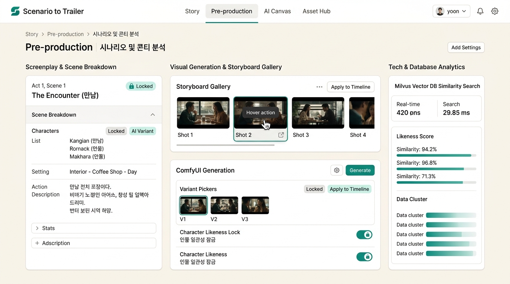

PROJECT 01
RAG · GENERATIVE PIPELINE시나리오 분석·제작 지원 플랫폼
ROLE업무 개선 제안 · 기획 · 아키텍처 설계 · 프론트엔드·백엔드 개발 단독 수행
시나리오 분석과 견적·이미지·영상 생성을 연결한 AI 제작 지원 플랫폼
Next.jsReactTypeScriptPythonFlaskSQLAlchemyMilvusvLLMLM StudioComfyUICeleryRedisFFmpeg
PROBLEM & CONTEXT
시나리오를 분석한 결과가 견적 검토와 이미지·영상 제작에 이어지려면, 장면·인물·샷 정보를 각 작업에서 재사용할 수 있어야 했습니다. 시나리오를 공통 제작 데이터로 구조화하고, 분석 결과를 후속 작업에 전달하는 플랫폼을 제안했습니다.
시나리오 입력을 출발점으로 씬 분석·견적과 컨셉·영상 제작을 연결했습니다. AI 추천과 생성 결과를 사용자가 검토·선택할 수 있도록 구성하고, 장시간 작업은 비동기 처리했습니다.

[시나리오 분석·제작 지원 플랫폼 · 기능 구성 예시] 처리 흐름: 시나리오 입력 → 씬·샷 구조화 → 견적 분석·유사 사례 검색 → 컨셉 선택 → 비동기 영상 생성 → 트레일러 출력
ARCHITECTURE & DECISIONS
01
RAG를 업무 목적에 맞게 분리
입찰 견적은 RAG 비활성 경로로 유지하고, 과거 사례를 참고하는 실적 전망을 별도로 산출했습니다.
02
모델 응답을 검증한 뒤 다음 단계로 전달
씬 식별자 검사·교정 재요청·규칙 기반 대체 처리로 잘못된 추천의 후속 전달을 방지했습니다.
03
생성 작업과 API 응답의 생명주기 분리
Celery·Redis와 ComfyUI 서버 분배로 생성 작업을 비동기 처리하고 실패 노드·재요청에 대응했습니다.